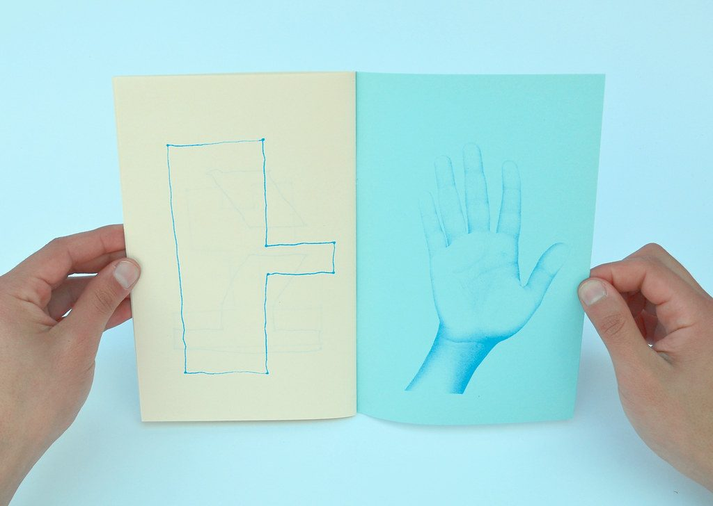

References / Book / 503
Mario Felipe, Mano V/S Regla
A 36-page riso-printed artist’s book in an edition of 50, printed in one blue ink on cream and turquoise paper.
- Source
- Flickr: Mario Felipe, “Mano Vs Regla | Book”
- Creator
- Mario Felipe; published by Gran Negro Ediciones
- Made
- Spring 2015
- Style
- Risograph (agent-proposed, not yet reviewed by a person)
- Moods
- Quiet, handmade, minimal
- Evidence
- Viewed the 1024 × 728 px Flickr “large” file of an open spread. A second photo shows the cover (Flickr).
- Reviewed
- Rights
- Open license, stored. License: CC-BY-2.0. Rights policy
Context
The Flickr description says: “Editado por Gran Negro Ediciones … Impreso en Risografía. Edición de 50. 20,5 x 13,5 cm. 36 páginas. Primavera 2015.” It links to the author’s own online store.
Observed
- A single bright blue ink prints on two paper colors: cream on the left page and turquoise on the right.
- The left page has a hand-drawn line figure with dots at the corners.
- The right page has a photograph of a hand, screened into fine grain, in the same blue.
- The paper color changes the apparent color of the ink.
Why it belongs
The book uses colored stock as a second “color” at no extra drum, a common riso economy.
Borrow
Change the page ground between sections and keep one ink, so the palette shifts without new colors.
Measured
Machine-extracted by tools/image-traits.py on . Full measurement.
- Mean chroma
- 0.23
- Palette
- #b7edf8 34%
- #8be1e5 21%
- #d8e5cf 20%
- #abd8df 6%
- #a38373 5%
- #a79080 4%
- #976c60 2%
- #97bac3 2%

